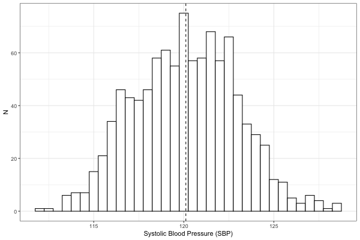
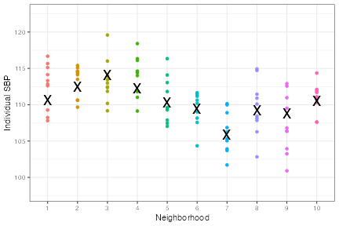
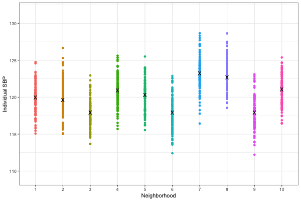
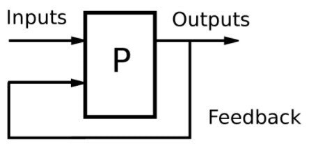

Comparing the impact of individual vs. contextual variation using intraclass correlation
EPID 684
Spatial Epidemiology
3/24/2022
Jon Zelner
jzelner@umich.edu
epibayes.io
Today’s Theme

How can we characterize the relative importance of individual vs. contextual drivers of variation?
Agenda
- Review the concept of intraclass correlation
- Set goals for in-class workshop on 3/31
What is intraclass correlation?
- A measure of global clustering.
- Measures the amount of the total variance in an outcome that is clustered within vs. between groups
- Groups can include households, neighborhoods, cities, etc.
- ICC is useful when there is individual-level and spatial variation but it is not clear which is most important
What is variance?
- Square of the average deviation from the mean
- So, if standard deviation: \(\sigma\) = 10$, Variance: \(\sigma^2\) = 100.
The total variance is the sum of the within- and between-group variances
\[ \sigma^2_{Total}=\sigma^2_N+\sigma^2_I \]
\(\sigma^2_N\) = variance in outcomes.
\(\sigma^2_I\) = Individual level variance in outcomes ( variation)
We can then use these to calculate the ICC
\[ ICC=\frac{\sigma_{N}^2}{\sigma_{N}^2+\sigma_{I}^2} \]
In words: the ICC is the proportion of the total variation in the outcome that occurs within the units we care about.
A simple worked example

500 observations of blood pressure with \(\bar{x}\) = 120, \(\sigma^2\) = 8
Plotting by neighborhood shows that there is more than just individual variation

Use neighborhood means to estimate between-neighborhood variance

We can use this information to calculate the ICC
- Total Variance = 8
- Neighborhood Variance = 3
- Individual Variance = Total - Neighborhood = 5
- ICC = \(\frac{\text{individual variance}}{\text{total variance}}\) = .375
What does that mean?
- About 38% of variation in SBP outcomes is attributable to neighborhood.
- Seems like a lot, but importance is ultimately relative to the what biological and public health mechanisms are of interest.
- Provides a basis for comparison with other locations.
Preparing for What route will you take? workshop
- Why are we doing this?
- How should you prepare?
Effective communication of spatial questions and analyses is central to the goals of this course.
- Identify well-posed spatial problems in public health and epidemiology.
- Articulate concrete, informed, goals for spatially-focused public health interventions and research.
- Suggest appropriate theoretical and analytic frameworks for understanding spatial variation in public health problems and interventions and policies meant to ameliorate them.
Since these are difficult and complex problems, good feedback is essential to getting your message across
What does this trolley have to do with feedback? Let me tell you a story…
What does helpful feedback do?

Generate insights that facilitate improvement or growth in the topic at hand
What makes for helpful feedback?
- Take the perspective of a peer or member of the intended audience who wants to learn about the topic, rather than a teacher/evaluator with an interest in finding flaws.
- Start by really trying to understand what your partner is trying to acheive.
- Be specific in your feedback and keep it close to the paper you’re reading.
- Ask questions: If something doesn’t make sense, explain what about it is confusing and ask what they were trying to accomplish.
- Flag things you find interesting as well as those that are unclear. Knowing what is working is as or more important than knowing what isn’t.
- Suggest resources or ideas that might help your partner advance their project.
Next Time